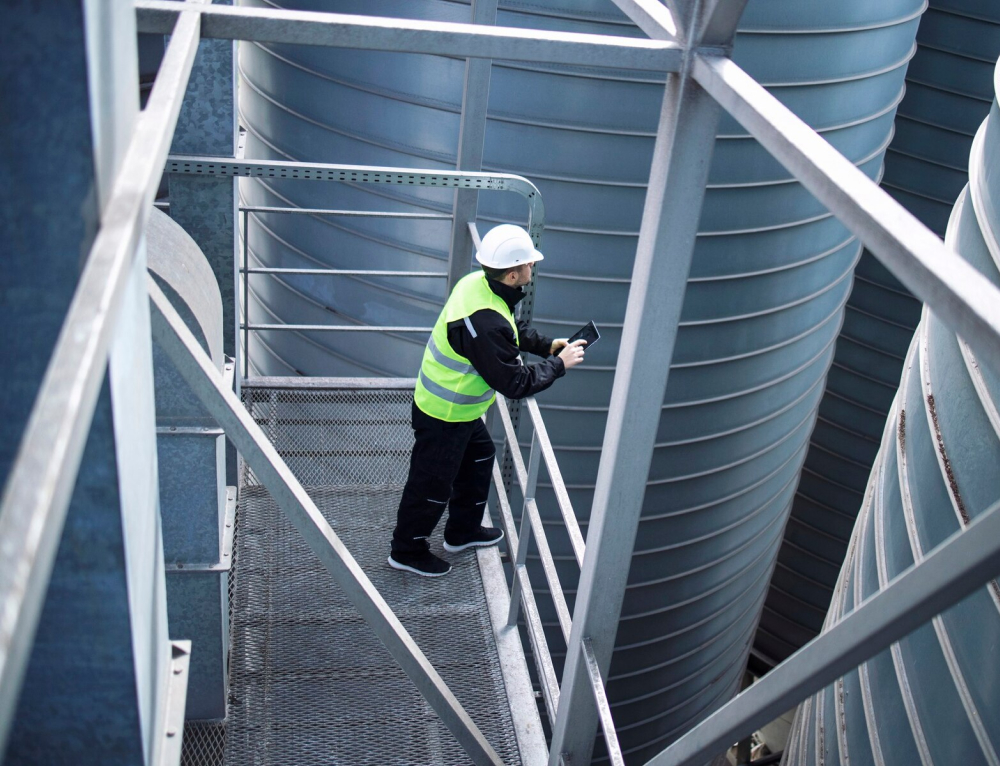
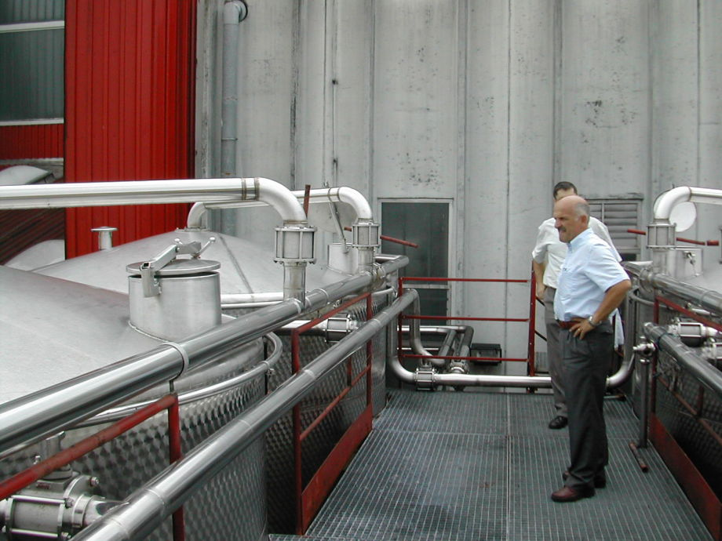

Wix Water Tech
Advanced Water Treatment for a Sustainable Asia
Advanced Water Treatment for a Sustainable Asia
We provide sustainable biotechnological solutions for the sanitation, environmental hygiene, and on-site treatment of agricultural, industrial, and urban waste and wastewater across Asia.
This means working responsibly to achieve the purification of the environment in which we operate, without compromising the quality of life in the areas we serve.
We are committed to designing, selling, and commissioning the most advanced self-contained plants. Some of our partners have years of experience and facilities on five continents to process urban solid and organic waste from various sources.
At Wix, we uphold a spirit of integrity and strive to improve the water environment and benefit society by addressing the challenges faced by our stakeholders and customers while promoting business development.
This means we apply the same ethical standards and strategies to our corporate citizenship as we do to business growth. As we expand, we meet challenges by leveraging our technology, financial strength, and intellectual resources to benefit employees, customers, and shareholders in a sustainable way.
Email: contact@wixwatertech.xyz